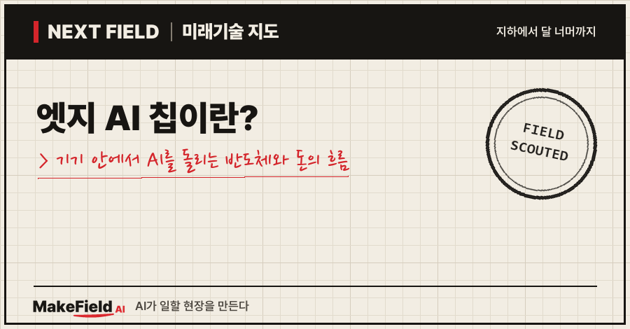
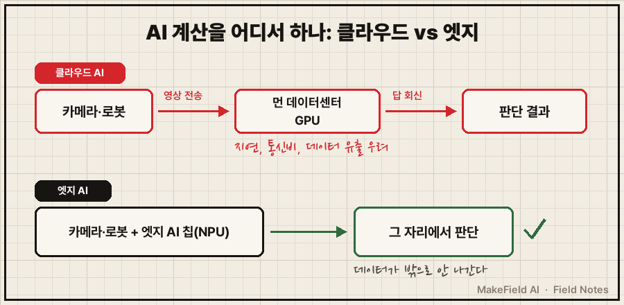
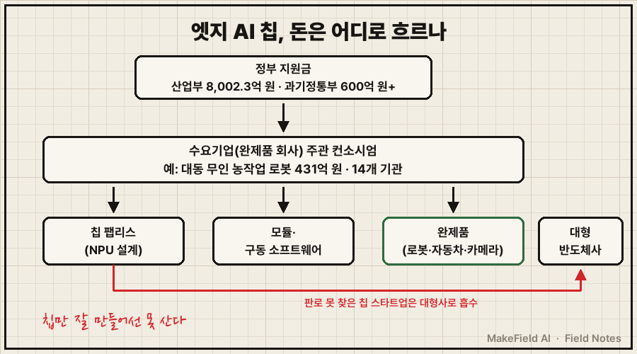
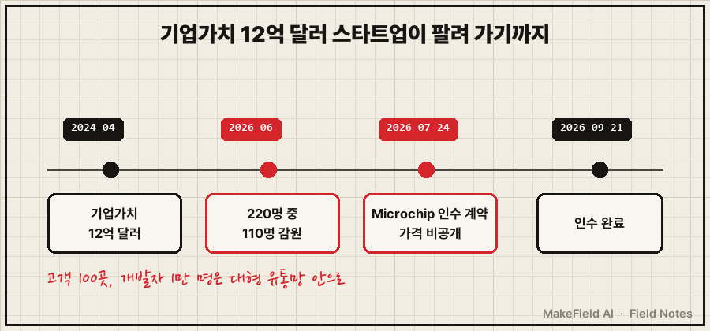

한 줄 요약: 엣지 AI 칩은 데이터를 먼 데이터센터로 보내지 않고 카메라·로봇·기계 안에서 바로 AI 계산을 하는 저전력 반도체예요. 시장은 2025년 약 273억 달러로 추정되고(Grand View Research, 2026-06), 한국 정부는 2026~2030년 8,002.3억 원을 이 분야에 넣기로 확정했습니다(산업통상부, 2026-06-02). 그런데 같은 해, 한때 기업가치 12억 달러로 평가받던 대표 스타트업 Hailo는 직원 절반을 내보낸 뒤 미국 반도체 회사에 '실적에 영향 없는 규모'로 팔렸어요.
"온디바이스 AI라는 말은 많이 듣는데 그게 칩 얘기야?" 싶은 분, 그리고 시장이 커진다는데 왜 칩 회사는 팔려 가는지 궁금한 분을 위한 글입니다. 2026년 11월 기준 공개 자료로 풀어볼게요.
1. 엣지 AI 칩이란 무엇인가요
엣지 AI 칩이란 기기 자체(현장, edge)에 붙어 AI 추론 계산을 하는 작은 전용 반도체다. 클라우드 AI가 '먼 본사에 전화로 물어보는 방식'이라면, 엣지 AI는 '현장 직원이 그 자리에서 판단하는 방식'이에요.
💡 엣지(edge) — 네트워크의 '가장자리', 즉 데이터가 처음 생기는 현장 기기 쪽을 말한다. 반대말은 중앙의 클라우드 데이터센터.
💡 온디바이스 AI — 기기(device) 안(on)에서 도는 AI. 엣지 AI와 거의 같은 말로 쓰인다.
이 칩의 핵심 부품은 NPU예요. 그래픽카드(GPU)가 무엇이든 하는 만능 일꾼이라면, NPU는 AI 계산 하나만 빠르고 적은 전기로 하도록 만든 전문 일꾼입니다.
💡 NPU(신경망 처리 장치) — AI 계산(대량의 곱셈·덧셈)만 전문으로 하는 칩 블록. 같은 일을 GPU보다 훨씬 적은 전력으로 한다.
💡 TOPS — 1초에 AI 계산을 몇 조(兆) 번 하는지 나타내는 성능 단위. 숫자가 클수록 빠르다.
감을 잡을 수 있는 실물이 있어요. 한국 팹리스 딥엑스의 DX-M1 모듈은 노트북 SSD처럼 꽂는 손가락 크기 카드인데, 1~5W 전력으로 25 TOPS를 내고 미국 부품 유통사 디지키에서 개당 180달러에 팔립니다(DigiKey 판매 목록, 2026-11 조회). 전구 하나보다 적은 전기로 카메라 영상을 실시간 분석할 수 있는 수준이에요.
💡 팹리스 — 공장 없이 반도체 설계만 하고 생산은 삼성·TSMC 같은 위탁생산 회사에 맡기는 회사.
| 구분 | 클라우드 AI | 엣지 AI |
|---|---|---|
| 계산 위치 | 먼 데이터센터 | 카메라·로봇·기계 안 |
| 칩 | 대형 GPU(수백 W 이상) | NPU 내장 소형 칩(수 W) |
| 강점 | 큰 모델, 학습 | 빠른 반응, 데이터가 밖으로 안 나감, 통신비 없음 |
| 약점 | 지연·통신 끊김·보안 우려 | 작은 모델만 들어감, 칩마다 도구가 다름 |

그림을 글로 옮기면, 위 줄은 영상을 데이터센터까지 보냈다가 답을 받아오는 클라우드 방식, 아래 줄은 기기 안 NPU가 그 자리에서 판단하는 엣지 방식이에요.
2. 왜 지금 뜨나요 — 로봇·카메라와 '비싸진 메모리'
이 칩이 지금 주목받는 이유는 로봇·자동차·카메라처럼 '그 자리에서 판단해야 하는 기기'가 늘고, 큰 AI 장비 값은 오르고 있기 때문이다.
수요 쪽부터 볼게요. 시장조사사 SNS Insider는 엣지 AI 반도체 시장이 2025년 253.6억 달러에서 2035년 1,513억 달러로 연 19.6%씩 자란다고 봤고, 가장 빨리 크는 분야로 자동차를 꼽았어요(SNS Insider, 2026-07). Grand View Research는 2025년 273억 달러에서 2033년 2,918억 달러, 연 34.7% 성장을 내놨습니다(Grand View Research, 2026-06). 두 전망은 성장률이 15%p, 2030년대 규모가 2배 가까이 차이 나요. 휴대폰·PC를 어디까지 포함하느냐에 따라 숫자가 크게 달라지는 '추정' 영역이라는 뜻입니다.
공급 쪽에서는 가격 신호가 분명해요. 엔비디아는 책상 위 AI 컴퓨터 DGX Spark 값을 3,999달러에서 4,699달러로 올리며 "업계 전반의 메모리 공급 제약을 반영했다"고 밝혔습니다(엔비디아 개발자 포럼, 2026-02). 2026년 7월에는 로봇·엣지용 Jetson 보드 값을 품목별로 33~101% 올렸어요. 휴머노이드 로봇의 '두뇌'로 파는 Jetson AGX Thor 개발 키트는 3,499달러에서 5,499달러가 됐습니다(CNX Software, 2026-07-22).
💡 Jetson(젯슨) — 엔비디아의 로봇·엣지용 AI 컴퓨터 보드 제품군.
💡 DGX Spark — 엔비디아의 책상 위 소형 AI 컴퓨터. 큰 메모리로 대형 언어 모델을 사무실에서 돌린다.
비싼 범용 장비 값이 뛸수록, 꼭 필요한 AI만 싸고 작은 전용 칩에 넣으려는 수요가 커지는 구조예요.
3. 돈의 흐름 — 누가 사고, 누가 파나요
엣지 반도체 시장의 돈은 '칩을 사서 자기 제품에 넣는 완제품 회사'가 쥐고, 정부 지원금도 그 완제품 회사가 주관하는 컨소시엄으로 흐른다. 칩 회사 혼자 칩을 잘 만든다고 돈이 오지 않는 구조예요.
한국 정부의 'K-온디바이스 AI반도체 기술개발' 사업이 이 구조를 잘 보여 줍니다. 2026~2030년 총 8,002.3억 원으로 자동차, IoT·가전, 기계·로봇, 방산 4대 업종을 대상으로 하고, 칩·모듈·구동 소프트웨어 개발부터 실증·양산까지 지원해요(산업통상부, 2026-06-02). 실제 선정 사례로 농기계 회사 대동이 '무인 농작업 로봇' 분야 주관기관이 됐는데, 2026년 7월부터 2030년 12월까지 총 431억 원 규모에 산학연 14개 기관이 참여합니다(MTN, 2026-09-10).
💡 컨소시엄 — 여러 기업·기관이 한 과제를 같이 따내려고 묶은 연합.
💡 IoT(사물인터넷) — 센서·가전·기계가 인터넷에 연결된 것.
과학기술정보통신부도 국산 AI 반도체를 넣은 제품·서비스 실증에 600억 원 이상을 새로 투입해요. 과제당 15억~30억 원, 기간 1~2년 규모이고, 예시 분야는 보안·네트워크·생활·도시 안전입니다(이투데이, 2026-08).

그림을 글로 옮기면, 정부 돈은 칩 회사에 바로 가지 않고 완제품 회사가 주관하는 컨소시엄을 거쳐 칩·모듈·완제품으로 나뉘어 흐르고, 판로를 못 찾은 칩 스타트업은 유통망을 가진 대형 반도체사로 흡수되는 그림이에요.
아래 기업명은 산업 구조를 설명하기 위한 예시이며 투자 판단과 무관합니다.
| 자리 | 하는 일 | 예시(공개 자료 기준) |
|---|---|---|
| 사는 쪽(완제품) | 칩을 자기 기기에 넣고 실증 | 대동(무인 농작업 로봇 주관), 현대차그룹 로보틱스랩(배송 로봇) |
| 칩 설계(팹리스) | NPU 설계, 위탁생산 | 딥엑스(한국), Hailo(이스라엘 → 미국 Microchip 인수) |
| 대형 반도체사 | 기존 고객망에 AI 칩을 끼워 판매 | Microchip, 텍사스 인스트루먼트(TI) |
| 플랫폼·도구 | 모델을 칩에 옮기는 공통 도구 | 구글 Coral NPU(오픈소스) |
(출처: MTN 2026-09-10, 이투데이 2026-04-14, Microchip 2026-07-24, TI, Google Research 2025-10-15)
4. 누가 하고 있나요 — 팔려 간 Hailo, 증명 중인 딥엑스
대표 기업 두 곳의 2026년은 '칩 성능보다 판로와 실매출이 생존을 가른다'는 점을 보여 준다.
- Hailo(이스라엘): 2024년 4월 1.2억 달러를 추가 유치하며 기업가치 12억 달러로 평가받았어요. 그러나 2026년 6월 직원 220명 중 110명을 내보냈고, 추진하던 SPAC 상장 합병도 무산됐다는 보도가 나왔습니다(Merca2, 2026-06-09). 이어 7월 24일 미국 반도체 회사 Microchip이 인수 계약을 맺었어요. 가격은 비공개이고, Microchip은 "재무 실적에 중대한 영향이 없을 것"이라고 밝혔습니다. Hailo는 고객 100곳 이상, 개발자 1만 명 이상을 가져가요(Microchip, 2026-07-24). 인수는 9월 21일 마무리됐습니다(Vermögenszentrum 전재 보도, 2026-09-21).
- 딥엑스(한국): 1세대 칩 DX-M1을 양산 중이고, 로봇·스마트팩토리·지능형 카메라를 적용처로 내세워요. 현대차그룹 로보틱스랩과 함께 만든 AI 컴퓨팅 솔루션이 배송 로봇 등에 들어가며, 다음 칩 DX-M2는 삼성 2나노 공정으로 2027년 양산이 목표입니다(이투데이, 2026-04-14). 2026년 내부 목표는 총매출 4,000만 달러, 제품 매출 2,500만 달러 이상이고, 회사가 밝힌 누적 구매 주문은 약 660만 달러예요(데일리안, 2026-04-14). 단순 계산하면 누적 주문은 제품 매출 목표의 약 26%입니다. 실제 확정 매출은 아직 공개되지 않았어요.
💡 SPAC(기업인수목적회사) — 상장만 해 둔 '빈 회사'와 합병해 짧은 절차로 증시에 들어가는 방법.
💡 Microchip — 공장·자동차용 소형 제어 칩(마이크로컨트롤러)을 많이 파는 미국 반도체 회사.

그림을 글로 옮기면, 기업가치 12억 달러였던 Hailo가 2년 남짓 만에 감원을 거쳐 대형 반도체사에 흡수되기까지의 순서예요.
5. 언제 오나요, 한계는 없나요
로봇·카메라처럼 이미 칩이 들어가는 분야에서는 '지금'이고, 공장 설비 전반으로 퍼지는 데는 '모델 옮기기'라는 병목이 남아 있다.
가장 큰 한계는 칩마다 개발 도구가 다르다는 점이에요. 구글은 이 문제를 "파편화 세금(fragmentation tax)"이라고 부르며, 여러 독자 프로세서에 맞춰 모델을 컴파일·최적화하는 일이 "어렵고 비싸다"고 썼습니다. 그래서 2025년 10월 오픈소스 Coral NPU 플랫폼을 내놓고 Synaptics를 첫 칩 파트너로 삼았어요(Google Research, 2025-10-15).
💡 컴파일러·SDK — 사람이 만든 AI 모델을 특정 칩이 알아듣는 형태로 바꿔 주는 번역기와 도구 모음. 칩 회사마다 다르다.
💡 모델 경량화(양자화) — 큰 AI 모델을 작은 칩에 넣으려고 숫자 정밀도를 낮추는 작업. 고화질 사진을 용량 작은 사진으로 줄이는 것과 비슷하다.
또 하나는 칩 회사들이 '공짜 AI'를 깔고 있다는 점입니다. TI는 전기차 탑재 충전기를 제어하는 바로 그 칩에서 합성곱 신경망(CNN) 모델로 전력망 고장을 감지하는 예제를 공개하며 "최대 95% 정확도", "추가 비용 없음"을 내세워요(TI 공식 페이지). 범용 AI 기능은 칩 값에 묶여 무료가 되고, 값은 실제 현장 데이터와 그 칩에 맞춘 이식·검증 작업 쪽으로 옮겨 가는 흐름이라는 해석이 가능합니다(추정 — 공개 자료를 종합한 판단).
💡 CNN(합성곱 신경망) — 이미지·파형에서 패턴을 찾는 데 강한 AI 모델 구조.
| 구분 | 확인된 것 | 아직 불확실한 것 |
|---|---|---|
| 시장 규모 | 2025년 250억~270억 달러대(조사사 2곳) | 2030년대 규모, 공장 설비용만 뗀 수치 |
| 정부 지원 | 산업부 8,002.3억 원(2026~2030), 과기정통부 600억 원+ | 선정 과제 전체 목록·성과 |
| 기업 | Hailo 감원 후 Microchip 인수 완료, 딥엑스 양산·목표 공개 | 인수 가격, 딥엑스 2026 실제 매출 |
| 병목 | 칩마다 다른 도구(구글 '파편화 세금') | 모델 이식에 고객이 실제 쓰는 비용 |
자주 묻는 질문
Q1. 엣지 AI 칩과 온디바이스 AI 반도체는 같은 말인가요?
거의 같은 말이에요. 둘 다 클라우드가 아니라 기기 안에서 AI를 계산하는 반도체를 가리키고, 정부 사업 이름에는 '온디바이스 AI반도체'가 쓰입니다.
Q2. 시장이 크는데 왜 Hailo 같은 회사가 팔렸나요?
칩 성능만으로는 판로가 열리지 않기 때문이에요. 돈을 쥔 쪽은 칩을 자기 제품에 넣는 완제품 회사이고, 고객 100곳을 가진 스타트업도 수많은 고객망을 가진 대형 반도체사의 유통망 안에 들어가는 길을 택했습니다.
Q3. 엣지 칩이 클라우드 AI를 대체하나요?
아니요. 큰 모델 학습과 복잡한 질문은 여전히 데이터센터 몫이고, 엣지 칩은 '그 자리에서 빨리, 데이터를 밖으로 내보내지 않고' 해야 하는 판단을 나눠 맡는 역할이에요.
오늘의 용어 정리
| 용어 | 쉬운 말 |
|---|---|
| 엣지 AI 칩 | 기기 안에서 AI 계산을 하는 저전력 반도체 |
| 온디바이스 AI | 기기 자체에서 도는 AI(엣지 AI와 거의 같은 말) |
| NPU | AI 계산 전용 칩 블록 |
| TOPS | 1초에 AI 계산을 몇 조 번 하는지 나타내는 단위 |
| 팹리스 | 공장 없이 설계만 하는 반도체 회사 |
| Jetson / DGX Spark | 엔비디아의 로봇·엣지용 AI 보드 / 책상 위 AI 컴퓨터 |
| 컨소시엄 | 한 과제를 같이 따내려고 묶은 기업·기관 연합 |
| IoT | 인터넷에 연결된 센서·가전·기계 |
| SPAC | 상장된 빈 회사와 합병해 증시에 들어가는 방법 |
| 컴파일러·SDK | AI 모델을 특정 칩용으로 바꾸는 번역기와 도구 모음 |
| 모델 경량화(양자화) | 큰 모델을 작은 칩에 넣으려고 정밀도를 낮추는 작업 |
| CNN | 이미지·파형 패턴 인식에 강한 AI 모델 구조 |
AI는 거대한 데이터센터에서만 크는 게 아니라, 손톱만 한 칩으로 쪼개져 기계 안으로도 들어가고 있어요. 다만 그 칩 시장에서 돈을 버는 자리는 '칩을 잘 만드는 곳'보다 '칩을 실제 제품에 넣고 증명하는 곳'에 가까워 보입니다. 다음 Next Field에서는 이렇게 비싸진 AI 장비 값이 회사 안에서 AI를 직접 돌리려는 조직에 어떤 영향을 주는지 이어서 살펴볼게요.
여러분 주변의 카메라나 기계에도 'AI 내장'이라는 문구가 붙기 시작했나요?
MakeField AI는 어렵고 낯선 산업 기술을 쉬운 말로 풀어 정리합니다 → https://makefield.ai
출처
[1] 산업통상부 보도자료(2026-06-02, KDI 경제정보센터 수록) — K-온디바이스 AI반도체 기술개발 사업 2026~2030년 8,002.3억 원 확정, 4대 업종, 풀스택 개발·실증·양산 지원
→ https://eiec.kdi.re.kr/policy/materialView.do?num=282161
[2] MTN(2026-09-10) — 대동 무인 농작업 로봇 분야 주관, 2026-07~2030-12, 총 431억 원, 산학연 14개 기관
→ https://news.mtn.co.kr/news-detail/2026090912363366734
[3] 이투데이(2026-08) — 과기정통부 국산 AI 반도체 실증 신규 과제 600억 원 이상, 과제당 금액·기간, 보안·네트워크·생활 분야
→ https://www.etoday.co.kr/news/view/2611476
[4] Microchip 보도자료(2026-07-24) — Hailo 인수 확정 계약, 가격 비공개, 실적에 중대한 영향 없음, 고객 100곳·개발자 1만 명 이상
→ https://ir.microchip.com/news-events/press-releases/detail/1406/microchip-technology-signs-definitive-agreement-to-acquire-hailo
[5] Vermögenszentrum 전재 보도(2026-09-21) — Microchip의 Hailo 인수 완료
→ https://www.vermoegenszentrum.ch/en/stock-exchange-and-markets/news/microchip-technology-completes-acquisition-hailo
[6] Merca2(2026-06-09) — Hailo 직원 220명 중 110명 감원, SPAC 합병 무산, 2024년 4월 기업가치 12억 달러
→ https://www.merca2.es/2026/06/09/hailo-despidos-estrategia-startup-2393094/
[7] 이투데이(2026-04-14) — 딥엑스 DX-M1 양산, 로봇·스마트팩토리 적용처, 현대차그룹 로보틱스랩 협업, DX-M2 삼성 2나노·2027 양산 목표
→ https://www.etoday.co.kr/news/view/2575625
[8] 데일리안(2026-04-14) — 딥엑스 2026 총매출 4,000만 달러·제품 매출 2,500만 달러 이상 목표, 누적 구매 주문 약 660만 달러
→ https://www.dailian.co.kr/news/view/1633409/
[9] DigiKey 판매 목록(2026-11 조회) — DX-M1 M.2 모듈 25 TOPS·1~5W, 개당 180달러
→ https://www.digikey.com/en/product-highlight/d/deepx/dx-m1-m2-ai-acceleration-module
[10] Grand View Research 보도자료(2026-06) — 엣지 AI 칩 시장 2025년 273억 달러 → 2033년 2,918억 달러, 연 34.7%
→ https://tools.prnewswire.com/en-us/live/20813/release/20260618EN86211
[11] SNS Insider 보도자료(2026-07) — 엣지 AI 반도체 시장 2025년 253.6억 달러 → 2035년 1,513억 달러, 연 19.6%, 자동차 최고 성장
→ https://iconnect007.com/article/150738/edge-ai-semiconductor-market-size-to-hit-15130-billion-by-2035/150735/aep
[12] 엔비디아 개발자 포럼(2026-02) — DGX Spark 3,999 → 4,699달러, 메모리 공급 제약 반영
→ https://forums.developer.nvidia.com/t/2-23-2026-price-change-announcement/361713
[13] CNX Software(2026-07-22) — Jetson 제품군 33~101% 인상, AGX Thor 개발 키트 3,499 → 5,499달러
→ https://www.cnx-software.com/2026/07/22/nvidia-increases-the-price-of-jetson-modules-and-devkits-by-up-to-101/
[14] Google Research(2025-10-15) — Coral NPU 오픈소스 플랫폼, '파편화 세금' 문제 제기, 첫 칩 파트너 Synaptics
→ https://research.google/blog/coral-npu-a-full-stack-platform-for-edge-ai/
[15] TI 공식 페이지(엣지 AI 활용 사례) — 전기차 탑재 충전기 제어 칩에서 CNN으로 전력망 고장 감지, 최대 95% 정확도, 추가 비용 없음
→ https://www.ti.com/technologies/edge-ai/use-cases/ac-grid-fault-detection.html